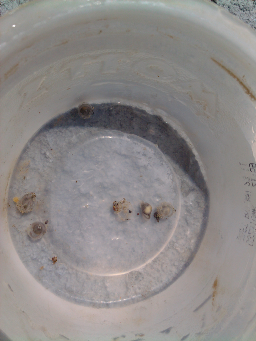

Family
ACIPENSERIDAE (Sturgeons)
Species
Acipenser fulvescens (Rafinesque, 1817)
Common Name
Lake Sturgeon
Distribution
Where found: Lake Superior, Lake Michigan, Lake Huron, Lake Erie, Lake Ontario
Native or non-native species: Native
Description
Egg (spawning to hatching)
Appearance and features
Egg color: Brown, dark with green to yellow cast
Other features: Demersal, adhesive, deposited singly, heavier than water, surrounded by jelly-like adhesive or tough
Egg meristics
Egg diameter (mm): 3.2-3.5 mm
Spawning substrate location, features
Shallow water or shoals: 1 to 5m of water
Deep water: Areas of upwelling currents
Rapidly moving water: Outside bends and rapid moving water of rivers
Shoreline / nearshore: Wave-washed rocky lake shores
Other substrate: Near dams
Spawning strategies
Broadcast - demersal: Eggs and milt are scattered over large, clean rubble and abandoned
Other Spawning features
Spawning season: April, May or June
Fecundity: 50000-700000
Water temperature at spawning (degC): (11.0-)14.0-15.0(-16.0) degC
Incubation
Incubation period (days): 7-9.6
Incubation temperature (degC): 15 degC
Yolk Sac Larvae - YSL (hatching to complete absorption of yolk)
Appearance and features (body)
Body shape: Not elongate, not eel-shaped
Gill openings on each side: Single
Adhesive disc on snout: Absent
Chin barbels: Absent or not well developed
Intestine/Gut: Spiral valve evident
Appearance and features (head and mouth)
Eye: Small or undeveloped
YSL Meristics (mm)
Total Length (TL) of yolk-sac larvae (mm): (6.5-)8.0-8.5(-9.6) mm
Total length of recently hatched larvae (mm): (6.5-)8.0-8.5(-12.0) mm
YSL Morphometry (%)
Preanal length (as % of Total Length): (58-)67-69 %
Pigmentation
Body: Unpigmented
Eyes: Eyes unpigmented
Yolk sac
Yolk sac description: Elongate or extending to anus
Additional YSL features based on size
2-3 days posthatch
Mouth opening appears
11-12mm
Morphometry (as % of Total Length TL):
| body depth at anus | 14-18% |
| eye diameter | 3-4% |
| head length | 10-11% |
| preanal length | 67-69% |
| yolk sac depth | 19-25% |
| yolk sac length | 34-37% |
Myomeres: total myomeres= 57-64
Pigmentation: body and eyes lacking pigment; yolk sac covered with fine melanophores producing dusky appearance
Finfold: continuous, breaking only at anus
12-13mm
Morphometry (as % of Total Length TL):
| body depth at anus | 15-17% |
| eye diameter | 4% |
| head length | 11-12% |
| preanal length | 66% |
| yolk sac depth | 20-24% |
| yolk sac length | 33-35% |
Myomeres: total myomeres= 57-64
Pigmentation: body and eyes lacking pigment; yolk sac covered with fine melanophores producing dusky appearance
Body: spiral valve visible through intestinal wall
Finfold: continuous, breaking only at anus
15-17mm
Morphometry (as % of Total Length TL):
| body depth at anus | 14-17% |
| eye diameter | 4-5% |
| head length | 16-19% |
| preanal length | 58-65% |
| yolk sac depth | 15-21% |
| yolk sac length | 26-30% |
Pigmentation: eye fully pigmented; dark band of chromatophores extends from snout through eye to caudal fin just below lateral line; a few small melanophores on posterior region of yolk sac and on spiral valve give dusky appearance; venter immaculate except for a few melanophores on posteior of gut; dorsum evenly covered with fine melanophores; some melanophores present on finfold between dorsal actinotrichia and tip of caudal fin
Body: spiral valve still evident
Head and mouth: barbels appear 3-4 days posthatching (evident at 15mm); opening of nasal capsule not yet divided in two by fleshy bridge; cleithrum present; maxilla beginning to form; snout rounded
Finfold: continuous, breaking only at anus
18-19mm
Morphometry (as % of Total Length TL):
| body depth at anus | 13-14% |
| eye diameter | 3-4% |
| head length | 17-19% |
| preanal length | 58-60% |
| snout length | 5-6% |
| yolk sac length | 19-21% |
Pigmentation: eye fully pigmented; dark band of pigment along each side - dark band of chromatophores extends from snout through eye to caudal fin just below lateral line; a few small melanophores on posterior region of yolk sac and on spiral valve give dusky appearance; venter immaculate except for a few melanophores on posteior of gut; dorsum evenly covered with fine melanophores; some melanophores present on finfold between dorsal actinotrichia and tip of caudal fin
Body: spiral valve still evident
Snout: rounded
Finfold: continuous, breaking only at anus
Fins: actinotrichia present in areas of future dorsal and anal fins
19-22mm
Pigmentation: dark band of pigment along each side
Snout: shovel nose apparent at 20mm
Larvae (complete absorption of yolk to development of full complement of adult fin rays and absorption of finfold)
Appearance and features (body)
Body shape: Not elongate, not eel-shaped
Gill openings on each side: Single
Chin barbels: Present, multiple (under chin, preceeding mouth)
Appearance and features (head and mouth)
Directional position of mouth: Inferior
Larvae Meristics
Total length (mm): (22.0-)23.0-195.0 mm
Larvae Morphometry (%)
Preanal length (as % of Total Length): 53-58 %
Body depth at anus (as % of Total Length): 9-11 %
Eye diameter (as % of Total Length): 4-5 %
Head length (as % of Total Length): 22-29 %
Snout length (as % of Total Length): 10-14 %
Pectoral fin length (as % of Total Length): 7-13 %
Larvae Myomeres
Preanal to Postanal myomeres: Preanal almost equal but greater than postanal (difference of 5 or less)
Pigmentation
Body: Pigmented, Pigment increases as size increases, Dark lateral band evident
Additional Larval features based on size
22-23mm
Morphometry (as % of Total Length TL):
| body depth at anus | 10-11% |
| eye diameter | 4% |
| head length | 22-24% |
| preanal length | 57% |
| snout length | 10% |
| pectoral fin length | 10-11% |
| pelvic fin length | 8% |
Pigmentation: eye fully pigmented; two large black spots on upper surface of snout between dorsal and lateral aspects - one opposite base of dorsal fin, one below; dark band of chromatophores extends from snout through eye and graduallly blends into dense pigmentation near the dorsal fin; venter immaculate except for a few chromatophores on snout; dorsum completely covered with small, evenly spaced melanophores, most dense between dorsal fin and tip of caudal fin
Yolk: absorbed
Head and snout: nasal openings evident; snout longer, more slender
Fins: dorsal fin rays more developed; pectoral fin rays developing; depressed fins differentiating from finfolds
23-31mm
Morphometry (as % of Total Length TL):
| body depth at anus | 9-11% |
| eye diameter | 4-5% |
| head length | 24-29% |
| preanal length | 53-58% |
| snout length | 11-14% |
| pectoral fin length | 7-13% |
Pigmentation: eye fully pigmented; two large black spots on upper surface of snout between dorsal and lateral aspects - one opposite base of dorsal fin, one below; dark band of chromatophores extends from snout through eye and graduallly blends into dense pigmentation near the dorsal fin; venter immaculate except for a few chromatophores on snout; dorsum completely covered with small, evenly spaced melanophores, most dense between dorsal fin and tip of caudal fin
Yolk: absorbed
Head and snout: mouth full developed; barbels fully developed
42-44mm
Head and snout: infraorbital canal complete
Body: dorsal rostal plates appear
Fins: 20 rays in pectoral fin
75-195mm
Pigmentation: eye fully pigmented; head, back, sides & caudal peduncle have smaller black chromatophores; side has dark blotches dissappearing with age; considerable variation in color ranging from tan, buff, brown, copper, olive, gold to gray, black, red & yellow-red; two large black spots on upper surface of snout between dorsal and lateral aspects - one opposite base of dorsal fin, one below
Fins: 28 rays in pectoral fin
Family Notes
The Acipenseridae is a primitive family of bony fishes occurring throughout the northern hemisphere. The family includes 23 species in 4 genera. Acipenser is composed of 16 species, 7 of which occur in the United States and Canada, yet only Acipenser fulvescens is known from the Great Lakes region. Sturgeons are freshwater anadromous fishes characterized by the presence of four barbels in front of an inferior mouth, body with rows of large bony scutes evident on larvae and juveniles, becoming less prominent in adults, dorsal and anal fins located far back on the body, skelton partially cartilaginous and a large heterocercal tail.
Unfortunately, the reproductive biology of sturgeons has been poorly studied. This is the case with Acipenser fulvescens whose populations had been so diminished by intense fishing pressure in the late 1800's that is is currently listed as a "threatened" species in the states of Michigan and Illinois. It is estimated that only 1% of its original population exists today (F. P. Binkowski, personal communication). Lake sturgeon reach sexual maturity at ca. 20 to 23 years. Some females live 80 years while males live somewhat shorter lives of about 55 years.
Lake sturgeon eggs are usually very tough, adhesive and 3.2 to 3.5 mm
in diameter. Underdeveloped, unpigmented young hatch at 8 to 12 mm.
Development is slow, the four barbels are evident at 15 mm and the shovel
nose is apparent at 20 mm.
Asipenser fulvescens, lake sturgeon. Eggs on Eggmat. St. Clair River, Mazlanka's Reef North Channel, Stacey Ireland, USGS Great Lakes Science Center, 2012
Asipenser fulvescens, lake sturgeon. Eggs Hatching in Field. St. Clair River, Mazlanka's Reef North Channel, Stacey Ireland, USGS Great Lakes Science Center, 2012

 Asipenser fulvescens, lake sturgeon. Larva mouth, 21.8mm. St. Clair
River, Mazlanka's Reef North Channel, Stacey Ireland, USGS Great Lakes
Science Center, 2013
Asipenser fulvescens, lake sturgeon. Larva mouth, 21.8mm. St. Clair
River, Mazlanka's Reef North Channel, Stacey Ireland, USGS Great Lakes
Science Center, 2013 Asipenser fulvescens, lake sturgeon. Larva, 31mm. Laboratory-reared,
Wisconsin, original illustration by N. A. Auer, specimens provided by F.
P. Binkowski, Center for Great Lakes Studies, University of
Wisconsin-Milwaukee
Asipenser fulvescens, lake sturgeon. Larva, 31mm. Laboratory-reared,
Wisconsin, original illustration by N. A. Auer, specimens provided by F.
P. Binkowski, Center for Great Lakes Studies, University of
Wisconsin-Milwaukee